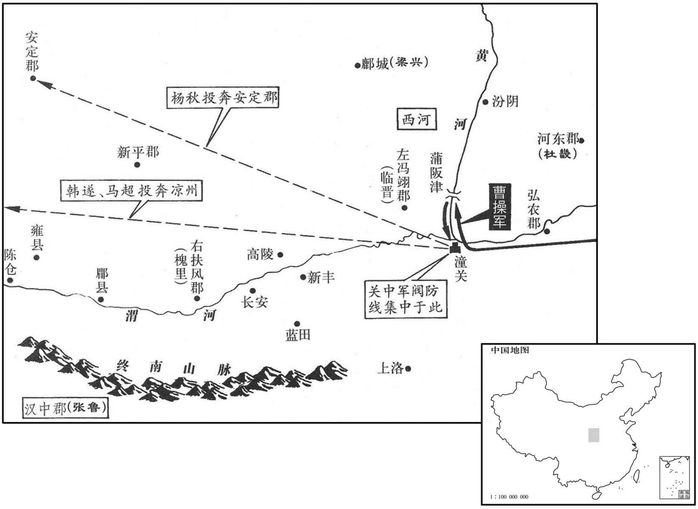
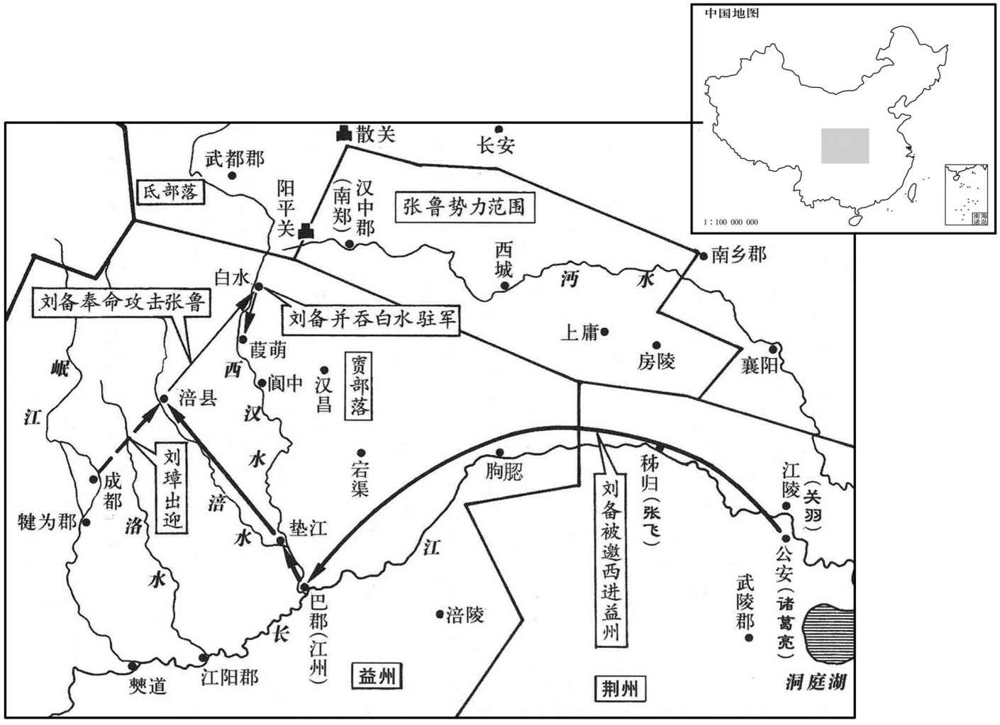

公元211年资治通鉴：本年记事、原文与白话对照
按原书编年位置阅读；追叙和史论不等于本年发生的事件。白话采用所据译本，缺译不以生成译文补齐。
卷66 · 本年记事
公元211年 · 汉孝献皇帝建安十六年
十六年〔（辛卯、二一一）〕
上传原文的注释括号有异常，字符原样保留；无法可靠划分的段落默认全文显示。
本年事件索引（现代整理）
春，正月，以曹操世子丕为五官中郎将，置官属，为丞相副。〔汉五官中郎将，主五官郎而已，未尝置官属也；领属光禄勋，未尝为丞相副也。〕
春季，正月，任命曹操世子曹丕为五官中郎将，设置官属，作为丞相曹操的副手。
三月，操遗司隶校尉锺繇讨张鲁，使征西护军夏侯渊等将兵出河东，与繇会。〔渊之族，操所自出也；付以西征先驱之任，以资序未得为征西将军，故以护军为名。〕仓曹属高柔谏曰：〔公府仓曹，主仓谷事；有掾，有属。〕「大兵西出，韩遂、马超疑为袭己，必相扇动。宜先招集三辅，三辅苟平，汉中可传檄而定也。」操不从。
三月，曹操派遣司隶校尉钟繇讨伐张鲁，命令征西护军夏侯洲等率领大军从河东出发，与钟繇会合。丞相仓曹属高柔劝曹操说：“大军向西进发，韩遂、马超会疑心是袭击他们，必然互相煽动。应当先安定三辅地区，如果三辅地区平定，只需发布文书，就能平定汉中。”曹操不听。
关中诸将果疑之，〔操估关中而远征张鲁，伐虢取虞之计也。盖欲讨超、遂而无名、先张讨鲁之势以速其反，然后加兵耳。〕马超、韩遂、侯选、程银、杨秋、李堪、张横、梁兴、成宜、马玩等十部皆反，其众十万，屯据潼关；〔潼关，在弘农华阴县。水经注曰：河在关内南流，潼激关山，因谓之潼关；晋所谓桃林之塞，秦所谓阳华是也。〕操遣安西将军曹仁督诸将拒之，〔晋百官志曰：四安起于魏初。谓安东、安西、安南、安北四将军也。〕敕今坚壁勿与战。命五官将丕留守邺，以奋武将军程昱参丕军事，〔沈约曰：奋武将军，始于汉末。〕门下督广陵徐宣为左护军，〔门下督，督将之居门下者。〕留统诸军，乐安国渊为居府长史，统留事。〔姓谱：齐有国氏，世为上卿。又郑十穆子国之后，为国氏。〕秋，七月，操自将击超等。〔将，即亮翻；下同。〕议者多言：「关西兵习长矛，非精选前锋，不可当也。」操曰：「战在我，非在贼也。贼虽习长矛，将使不得以刺，诸君但观之。」〔在我而不在敌，故可以制胜，此未易与常人言也。刺，七亦翻；下同。
关中的将领们果然起了疑心，马超、韩遂、侯选、程银、杨秋、李堪、张横、梁兴、成宜、马玩等十部都起来造反，合起来有十万人马，据守潼关。曹操派遣安西将军曹仁统率诸将抵挡，令他们坚守营寨，不要出战。命令五官中郎将曹丕留守邺城，委任奋武将军程昱协助曹丕处理军务；任命门下督广陵人徐宣为左护军，留在邺城统率留守部队；任命乐安人国渊为丞相府的居府长史，负责留守事务。秋季，七月，曹操亲统大军，进攻马超等。许多参预军务讨论的人都说：“函谷关以西的士兵善于使用长矛，不挑选精锐部队作前锋，会抵抗不住的。”曹操说：“战争的决定权控制在我手中，而不在敌人手中。他们虽然善于使用长矛，我将使他们的长矛无法刺杀，你们只管着看吧。”
八月，操至潼关，与超等夹关而军。操急持之，而潜遣徐晃、朱灵以步骑四千人渡蒲阪津，据河西为营，〔蒲阪津，在蒲阪县西。河西即唐之蒲津关。考异曰：「太祖至潼关，恐不得渡，召问晃。晃曰：『公盛兵于此，而贼不复别守蒲阪，知其无谋也。今假臣精兵渡蒲阪津，为军先置以截其里，贼可禽也。』太祖曰：『善。』「按武帝纪，潜遣二将渡蒲阪，皆太祖之谋，而晃传云皆晃之策。盖陈氏各欲称其功美，不相顾耳。〕闰月，操自潼关北渡河。兵众先渡，操独与虎士百余人留南岸断后。〔断，丁管翻。〕马超将步骑万余人攻之，矢下如雨，操犹据胡不动。许褚扶操上船，船工中流矢死，〔中，竹仲翻。〕褚左手举马鞍以蔽操，右手刺船。校尉丁斐，放牛马以饵贼，贼乱，取牛马，操乃得渡；遂自蒲阪渡西河，循河为甬道而南。超等退拒渭口，〔前书，渭水至船司空入河。后汉省船司空，属华阴县。渭口之东，即潼关也。〕操乃多设疑兵，潜以舟载兵入渭，为浮桥，夜，分兵结营于渭南。超等夜攻营，伏兵击破之。超等屯渭南，遣使求割河以西请和，操不许。九月，操进军，悉渡渭。超等数挑战，又不许；固请割地，求送任子，贾诩以为可伪许之。操复问计策，〔数，所角翻。挑，徒了翻。复，扶又翻。〕诩曰：「离之而已。」操曰：「解！」〔解，户买翻，晓也。〕
八月，曹操来到潼关，与马超等隔着潼关扎营。曹操表面上对马超急剧施加压力，暗中却派遣徐晃、朱灵率领步、骑兵四千人渡过蒲阪渡口，到黄河以西扎营。闰八月，曹操从潼关向北渡过黄河。士兵先过河，曹操单独与虎贲武士一百余人留在黄河南岸断后。马超率领步、骑兵一万余人前来进攻，箭如雨下，曹操仍坐在折凳上不动。许褚扶曹操上船。船工被流箭射中而死，许褚左手举起马鞍来为曹操抵挡乱箭，右手撑船。校尉丁斐，把曹军的牛马放出来引诱箸人，马超军大乱，兵士纷纷去抢牛马，曹操才得以渡过黄河。曹操大军就从蒲阪渡过西河，沿河作甬道，向南推进。马超等退守渭水流入黄河的渭口。曹操于是多设疑兵，暗中用船装载士兵进入渭水，修造浮桥。夜里，分兵到渭水南岸修筑营垒。马超等乘夜攻营，被伏兵击败。马超等在渭南驻军，派遣使者请求割让黄河以西土地，请求和解。曹操不答应。九月，曹操进军，全部渡过渭水。马超等几次挑战，但曹操仍然不许应战。马超等一再请求割让土地，并请求送儿子去作人质。贾诩部队认为可以假装同意，曹操再问他下一步的策略，贾诩说：“离间他们的联盟而已。曹操说：“我明白了。”

韩遂请与相见，操与遂有旧，于是交马语移时，〔遂与樊稠交马语，而得以毙稠；与曹操交马语，乃以自毙。然后知遂之所以遇稠者，非用数也。若马超等之疑遂，则犹李傕之疑稠耳。〕不及军事，但说京都旧故，拊手欢笑。时秦、胡观者，前后重沓，〔重，直龙翻。〕操笑谓之曰：「尔欲观曹公邪﹖亦犹人也，非有四目两口，但多智耳！」既罢，超等问遂，「公何言﹖」遂曰：「无所言也。」超等疑之。他日，操又与遂书，多所点窜，如遂改定者；超等愈疑遂。〔二者皆所以离之也。考异曰：许褚传曰：「太祖与韩遂、马超等会语，左右皆不得从，唯将褚。超负其力，阴欲前突太祖，素闻褚勇，疑从骑是褚，乃问曰：『公有虎侯者安在﹖』太祖顾指褚，褚瞋目眄之，超不敢动。」按时超不与遂同在彼，故疑此说妄也。〕操乃与克日会战，〔克日者，克定其日也。〕先以轻兵挑之，〔挑，徒了翻。〕战良久，乃纵虎骑夹击，大破之，斩成宜、李堪等。遂、超奔凉州，杨秋奔安定。
韩遂请求与曹操相见，曹操与韩遂本来是老朋友，于是，他们两人来到阵前，马头相交，在一起说了很长时间，没有说到军事，只是谈论京都的往事与老朋友们，高兴时拍手欢笑。当时，马超等部队中的关中人与胡人都来围观，前后重重叠叠，曹操笑着对他们说：“你们是想来看曹操吗？我也是一个人，并没有四只眼两张嘴，只是智谋多一些罢了。”会面结束后，马超等人问韩遂说：“曹操说了些什么？”韩遂说：“没有说什么。”马超等有了疑心。另一天，曹操又给韩遂写了一封信，信中圈改涂抹了许多地方，好象是韩遂所改的，马超等更加怀疑韩遂。曹操于是与马超等约定日期，进行会战。曹操先派轻装部队进行挑战，与马超等大战多时，才派遣精锐骑兵进行夹击，大破马超等，斩杀成宜、李堪等。韩遂、马超逃奔凉州，杨秋逃奔安定。
诸将问操曰：「初，贼守潼关，渭北道缺，〔缺，谓缺而不备。〕不从河东击冯翊而反守潼关，引日而后北渡，何也﹖」操曰：「贼守潼关，若吾入河东，贼必引守诸津，则西河未可渡，吾故盛兵向潼关；贼悉众南守，西河之备虚，故二将得擅取西河；然后引军北渡，贼不能与吾争西河者，以二将之军也。〔二将，徐晃、朱灵也。将，即亮翻。〕连车树栅，为甬道而南，既为不可胜，〔兵法；先为不可胜以待敌之可胜。〕且以示弱。渡渭为坚垒，虏至不出，所以骄之也；故贼不为营垒而求割地。吾顺言许之，所以从其意，使自安而不为备，因畜士卒之力，一旦击之，所谓疾雷不及掩耳。〔淮南子之言。〕兵之变化，固非一道也。」
将领们问曹操说：“开始，敌军主力据守潼关，渭水以北的道路都空虚无备。但您不从河东进攻冯翊，反而屯兵在潼关之下，过了些日子再北渡黄河，是为什么？”曹操说：“敌军据守潼关，如果我军进入河东，敌军就会分兵把守各处渡口，我们便不能渡过西河。我故意以重兵集中在潼关，敌军就集中力量在南防守潼关，西河的戒备空虚，所以徐晃、朱灵两位将军能轻易取得西河。
然后，我率大军北渡黄河，敌军无法与我争夺西河的原因，就在于两位将军已先驻军在那里了。我用车两和树木等，向南修建甬道，既是为了安全，也是向敌军示弱。渡过渭水后修筑营垒，敌人挑战而坚守不出，是使敌军骄傲自大；因此，敌军未修营垒，而请求割地。我答应了要求，所以顺从他们的意思是为了使他们自以为安全而不加防备。同时，我们养精蓄锐，一旦发起攻击，好比是迅雷不及掩耳。乐机变化莫测，不能执着于一种方法。”
始，关中诸将每一部到，操辄有喜色。诸将问其故，操曰：「关中长远，若贼各依险阻，征之，不一二年不可定也。今皆来集，其众虽多，莫相归服，军无适主，〔适，丁历翻。〕一举可灭，为功差易，吾是以喜。」〔当此之时，关西之兵最为精强，而破于操者，法制不一也。易，以豉翻。〕
开始时，关中联军的每一部将领率军来到，曹操都面有喜色，部下将领们询问缘故，曹操说：“关中地区辽阔广大，如果他们各自据险坚守，我们征讨他们，没有一两年平定不了。现在，他们全都集中在一起，人数虽多，但互不相下，军队没主帅，可以一举消灭，比逐一征讨要容易，所以我心中喜悦。”
冬，十月，操自长安北征杨秋，围安定。秋降，〔降，户江翻。〕复其爵位，使留抚其民。
冬季，十月，曹操从长安出发，向北讨伐杨秋，包围安定。杨秋投降，曹操恢复杨秋的爵位，让他留下来安抚部众。
十二月，操自安定还，留夏侯渊屯长安。以议郎张既为京兆尹。既招怀流民，兴复县邑，百姓怀之。
十二月，曹操从安定班师，留夏侯渊驻守长安，任命议郎张既为京兆尹。张既用怀柔的政策招集流亡在外的难民重返家乡，兴建恢复县城与村镇，受到百姓的拥戴。
遂、超之叛也，弘农、冯翊县邑多应之，河东民独无异心；操与超等夹渭为军，军食一仰河东。〔仰，牛向翻。〕及超等破，余畜尚二十余万斛，〔畜，读曰蓄。〕操乃增河东太守杜畿秩中二千石。
韩遂、马超叛变朝廷时，弘农、冯翊属下的县邑多起来响应，只有河东郡的百姓没有异心。曹操与马超等隔渭水相持，军粮全靠河东郡供给。到马超等被击败后，还剩下二十余万斛军粮。曹操因此提高河东郡太守杜畿的官秩为中二千石。
扶风法正为刘璋军议校尉，〔军议校尉，使之议军事。盖时议必惟正之善谋，璋能官之而不能用耳。〕璋不能用，又为其州里俱侨客者所鄙，正邑邑不得志。〔侨，寄也，寓也。鄙，薄也。邑邑，不乐之意。〕益州别驾张松与正善，自负其才，忖璋不足与有为，〔忖，度也，思也。忖，寸本翻。〕常窃叹息。松劝璋结刘备，璋曰：「谁可使者﹖」松乃举正。璋使正往，正辞谢，佯为不得已而行。还，为松说备有雄略，〔为，于伪翻。〕密谋奉戴以为州主。
扶风人法正担任益州牧刘璋的军议校尉，但未受到刘璋的重用，又受到与他一起客居益州同州老乡们的鄙视，法正心情郁闷而不得志。益州别驾张松与法正关系亲密，张松对自己的才干十分自负，觉得刘璋庸庸碌碌，不能同他一起有所作为，经常暗中叹息。张松劝刘璋与刘备结交，刘璋说：“谁可以充当使者？”于是张松推荐法正。刘璋派法正担任使者，法正推辞，然后假装是不得已而接受任务出发。法正回来后，对张松说刘备有雄才大略，他们两人密谋策划奉迎刘备作为益州之主。
会曹操遣锺繇向汉中，璋闻之，内怀恐惧。松因说璋曰：〔说，轮芮翻。〕「曹公兵无敌于天下，若因张鲁之资以取蜀土，谁能御之！刘豫州，使君之宗室而曹公之深雠也，〔使，疏吏翻。〕善用兵；若使之讨鲁，鲁必破矣。鲁破，则益州强，曹公虽来，无能为也！今州〔【章：甲十一行本「州」下有「中」字；乙十一行本同；孔本同；张校同。】〕诸将庞羲、李异等，皆恃功骄豪，〔据裴松之注，庞羲免璋诸子于难，而李异杀赵韪，故各持功。〕欲有外意。〔谓其意欲附外也。〕不得豫州，则敌攻其外，民攻其内，必败之道也！」璋然之，遣法正将四千人迎备。主簿巴西黄权谏曰：〔谯周巴记曰：刘璋分巴郡垫江已上为巴西郡。〕「刘左将军有骁名，〔曹操表备为左将军，故称之。骁，坚尧翻。〕今请到，欲以部曲遇之，则不满其心；欲以宾客礼待，则一国不容二君，若客有泰山之安，则主有累卵之危。不若闭境以待时清。」璋不听，出权为广汉长。〔广汉县，属广汉郡。长，知两翻。〕从事广汉王累，自倒悬于州门以谏，璋一无所纳。
正在这时，曹操派遣钟繇率军讨伐占据汉中的张鲁，刘璋听到消息后，心中恐惧。张松乘机劝他说：“曹操的兵马天下无敌，如果攻下汉中后，利用张鲁的库存物资来进攻益州，谁能抵抗得住！刘备是您的同宗，曹操的大仇人，又善于用兵，如果让刘备讨伐张鲁，一定能击破张鲁。张鲁一破，则益州势力增强，曹操即使来攻，也无能为力了。现在本州的将领们如庞羲、李异等都自恃功劳，骄横不法，想要向外投靠。如果得不到刘备的帮助，则敌人在外面进攻，百姓在内叛变，一定会失败。”刘璋同意他的见解，派法正率领四千人去迎接刘备。主簿巴西人黄权劝谏刘璋说：“刘备以骁勇闻名于世，现在把他请来，要把他当作部曲来看待，则他不会满意；要以宾客的礼节接待，则一国不容二主。如果客人安如泰山，则主人就会危如累卵。不如关闭边界，以等待时局安定。”刘璋不听，把黄权调出，去担任广汉县县长。从事广汉人王累，把自己倒吊在成都城门来劝阻刘璋，刘璋一概不听。
法正至荆州，阴献策于刘备曰：「以明将军之英才，乘刘牧之懦弱；张松，州之股肱，〔别驾，州之上佐，故曰股肱。〕响应于内，以取益州，犹反掌也。」〔考异曰：韦曜吴书曰：「备前见张松，后得法正，皆厚以恩德接纳，尽其殷勤之欢。因问蜀中阔狭，兵器府库，人马众寡，及诸要害道里远近；松等具言之。」按刘璋、刘备传，松未尝先见备，吴书误也。〕备疑未决。庞统言于备曰：「荆州荒残，人物殚尽，东有孙车骑，〔备表权为车骑将军，故以称之。北有曹操，难以得志。今益州户口百万，土沃财富，诚得以为资，大业可成也！」备曰：「今指与吾为水火者，曹操也。〔言水火者，以其性相反也。〕操以急，吾以宽；操以暴，吾以仁；操以谲，吾以忠：〔谲，古穴翻。〕每与操反，事乃可成耳。今以小利而失信义于天下，柰何﹖」统曰：「乱离之时，固非一道所能定也。且兼弱攻昧，〔尚书仲虺之言。〕逆取顺守，〔前书陆贾曰：「汤、武逆取而顺守之。」〕古人所贵。若事定之后，封以大国，何负于信！今日不取，终为人利耳。」备以为然。乃留诸葛亮、关羽等守荆州，以赵云领留营司马，〔留营司马，掌留营军事也。〕备将步卒数万人入益州。
两版字句有差异，建议核对原文。
法正到荆州后，暗中向刘备献计说：“以将军的英明才干，正应利用刘璋的懦弱无能；张松是益州的主要官员，在内响应；这样来攻取益州，易如反掌。”刘备迟疑不决。庞统对刘备说：“荆州荒凉残破，人才已尽，东有孙权，北有曹操，难以得志。如今，益州的户口有一百万，土地肥沃，财产丰富，如果真得到益州作为资本，可成大业！”刘备说：“现在，与我势同水火的，只有曹操。曹操严厉，我则宽厚，曹操凶暴，我则仁慈；曹操诡诈，我则忠信；总与曹操相反，事情才能成功。如果现在因为贪图小利而对天下失去信义，怎么办？”庞统说：“天下大乱之时，本不是靠一种方法就能平定的。而且兼并弱小，进攻愚昧，用不合礼义的方法取得，再用合乎礼义的方法加以治理，这些行为都是古人所崇尚的。如果在事定之后，赐给刘璋面积广大的封地，对信义有什么违背！今天咱们不去夺取，终究会落入别人手中。”刘备同意他的看法。于是，留下诸葛亮、关羽等守卫荆州，任命赵云兼任留营司马，刘备亲自率领几万名步兵进入益州。
孙权闻备西上，〔上，时掌翻。〕遣舟船迎妹；而夫人欲将备子禅还吴，张飞、赵云勒兵截江，乃得禅还。
孙权听到刘备西入益州的消息，派船来接妹妹；孙夫人打算带刘备的儿子刘禅返回吴郡娘家，张飞、赵云部署军队在长江拦截孙权的船队，才把刘禅带回荆州。
刘璋敕在所供奉备，备入境如归，前后赠遗以巨亿计。〔遗，于季翻。〕备至巴郡，巴郡太守严颜拊心叹曰：「此所谓『独坐穷山，放虎自卫者』也。」备自江州北由垫江水诣涪。〔巴郡，治江州。垫江县，属巴郡。涪县，属广汉郡。垫江水，盖即涪内水也。庾仲雍曰：江州县对二水口，右则涪内水，左则蜀外水。垫，音迭。涪，音浮。贤曰：涪县故城，今绵州城。垫江县，唐之合州。〕璋率步骑三万余人，车乘帐幔，〔乘，绳证翻。幔，莫半翻，幕也。〕精光耀日，往会之。张松令法正白备，便于会袭璋。备曰：「此事不可仓卒！」〔卒，读曰猝。〕庞统曰：「今因会执之，则将军无用兵之劳而坐定一州也。」备曰：「初入他国，恩信未着，此不可也。」璋推备行大司马，领司隶校尉；备亦推璋行镇西大将军，领益州牧。〔晋百官志曰：匹锁通于柔远。谓镇东、镇西、镇南、镇北四将军也。〕所将吏士，更相之适，〔之，往也。更，工衡翻。〕欢饮百余日。璋增备兵，厚加资给，使击张鲁，又令督白水军。〔白水关，在广汉白水县，刘璋置军屯守，即杨怀、高沛之军也。杜佑曰：梁州金牛县，汉葭萌县地，县南有故白水关。〕备并军三万余人，车甲、器械、资货甚盛。璋还成都，备北到葭萌，〔葭萌县，属广汉郡。贤曰：葭萌，今利州益昌县。应劭曰：葭，音家。师古曰：萌，音氓。蜀王封其弟葭萌于此，因以名邑。先主改曰汉寿。〕未即讨鲁，厚树恩德以收众心。
刘璋命令沿途各郡、县为刘备提供所需物资，刘备进入益州境内，好像回到家中，刘璋前后赠送各种物资数以亿计。刘备到达巴郡，巴郡太守严颜扶胸叹息说：“这正是应验了‘独自坐在深山中，放出老虎来自卫’的谚语。”刘备自江州向北经垫江水到达涪县。刘璋率领步、骑兵三万余人，车辆悬挂着帐帷，耀眼生辉，与阳光互映，到涪县来会见刘备。张松让法正向刘备建议，就在会面时袭击刘璋。刘备说：“这件事不可仓猝！”庞统说：“现在，乘会面时捉住刘璋，则将军不必动用武力，就可坐得一州。”刘备说：“刚刚进入别人的地盘，恩德与信义尚未表现出来，不能这样做。”刘璋推举刘备代理大司马，兼任司隶校尉；刘备也推举刘璋代理镇西大将军，兼任益州牧。两人部下的官兵，也相互交往，在一起欢宴一百余日。刘璋给刘备增兵，拨给大量军用物资，让他去进攻张鲁，又命刘备指挥驻在白水的益州部队。加上刘璋拨来的部队，刘备部下已有三万余人，车辆、甲胄、器械及粮草钱财等都很充足。刘璋回到成都，刘备向北进发，到达葭萌，没有立即进攻张鲁，先广施恩德，收买人心。
